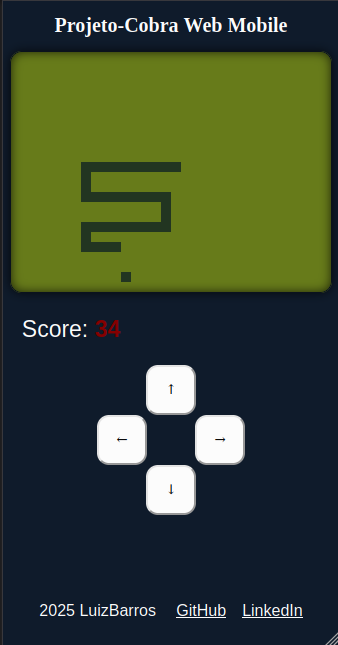

24/03/2025
Projeto-Cobra Web Mobile
Este projeto é um fork do Projeto-Cobra e está sendo desenvolvido em paralelo com o seu irmão, a diferença é que sua interface agora menor e também clássica, mas dessa vez inspirada nos celulares do final dos anos 1990. Outro aspecto importante é que os comandos se mantém os mesmos WASD e setas, porém agora com um teclado virtual na tela com 4 setas para que sejam ativadas pelo clique com o touch do celular.
